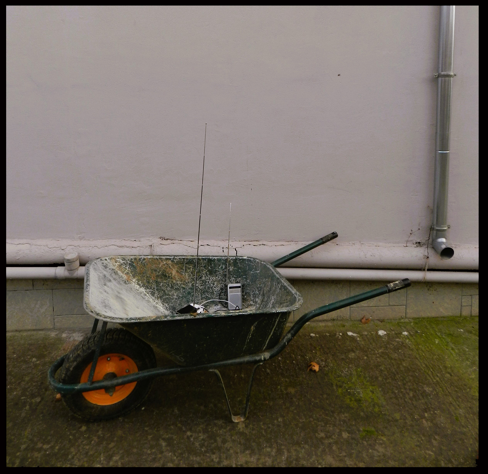

|
ΚΙΝΗΤΕΣ ΜΑΡΤΥΡΙΕΣ Αστική Παρέμβαση (Ηχητικό απόσπασμα) |
|
 |
|
Κινητές Μαρτυρίες, 2025Εγκατάσταση, |
|
| Ελληνικά
Το προτεινόμενο έργο πρόκειται για ένα ηχητικό κολάζ μαρτυριών της πλημμύρας που έπληξε τη Θεσσαλία το Σεπτέμβριο του 2023 το οποίο θα μεταδίδεται σε (χαμηλή εμβέλεια λόγο νομοθεσίας) σε κάποιο αχρησιμοποίητο σταθμό Fm.
H μετάδοση θα πραγματοποιηθεί κατά προτίμησή με χειροποίητο ραδιοφωνικό πομπό ο οποίος θα είναι εγκατεστημένος σε ένα καροτσάκι οικοδομής (όπως φαίνεται στη φωτογραφία).
Το καροτσάκι θα περιφέρετε σε αστικό κέντρο κάνοντας εφικτό το συντονισμό στο σταθμό μετάδοσης του έργου, εντός μερικών χιλιομέτρων.
- Η κατασκευή μικρο-πομπού é . Το περφόρμανς αυτό, όπως και το Radio Bicyclette περιλαμβάνουν τη μεταφορά του ήχου εισβάλλοντας σε (φυσικό και άυλο) χώρο με σκοπό να επικοινωνήσουν τις αναμνήσεις ενός συμβάντος διατηρώντας το στη μνήμη και δίνοντας ταυτόχρονα φωνή (στη περίπτωση προτεινόμενου έργου) στις κοινότητες που επλήγησαν ανεπανόρθωτα και δεν έλαβαν καμιά βοήθεια από τον κρατικό μηχανισμό. Two holes, one in the concrete floor and one in the ceiling, are a "found scenography" that anyone with Christian prejudices might immediately identify with access to hell and heaven, respectively. We don't know if those entelechies exist. We certainly do know, instead, numerous types of human stupidity, and we fear that the years to come are going to provide the sad opportunity of finding new varieties of them - and the resurrection of others we thought definitively buried. In the fragility of those rooms the common man is talking to us of utopia. The visitor, obscenely, listens to it and observes that accumulation of private remnants, dominated by the vertical message of the television, to which are opposed (someone has opposed, someone who is not there anymore but may return and discover us, intruders) Polaroid snapshots as disjointed fragments of a secret story. A ladder drives upwards. But an odd imagery of post-industrial saints blocks the way through. What type of people could live here, talking of utopia while being, at the same time, bombed by cynical and empty speaches, disguising, one day after another, their essence and personality with induced values, sailing with indifference on this ship of sleepers. |
English Die intermediale Intervention für ZEITGLEICH von Concha Jerez und José Iges war in der vernachlässigsten und engsten Ecke des alten Salzmagazins in Hall in Tirol untergebracht. Mit Sound und visuellen Elementen, die das noch unterstrichen, wurde der Ort in einen Raum der Meditation verwandelt. Die alten Büros des Salzmagazins, die aus einem größeren und einem kleinen Raum bestehen, hängen sozusagen in der Luft, da sie einen Durchgang zwischen dem Salzmagazin und dem Ver-dampferturm überdachen. Zwei Löcher, eines im Betonboden und das andere in der Decke, gehören zur "vorgefundenen" Szenerie. Wer immer mit christ-lichen Vorurteilen ausgestattet ist, könnte sie sofort mit Himmel und Hölle in Verbindung bringen.
Wir wissen nicht, ob es diese Entelechien gibt. Was wir hingegen genau kennen, sind zahlreiche Arten der menschlichen Dummheit, und wir fürchten, daß die Jahre, die vor uns liegen, uns die traurige Gelegenheit geben werden, neuen Arten dieser Dummheit zu begegnen - und der Auferstehung von anderen, die wir für immer begraben glaubten. Eine Leiter führt nach oben. Doch eine seltsame Ansammlung von kleinen post-industriellen Heiligen verbarrikadiert den Weg. Welche Art von Menschen könnte hier leben und von Utopia sprechen, während sie gleichzeitig von zynischen, leeren Reden bombardiert werden und Tag für Tag ihr Wesen und ihre Persönlichkeit hinter aufgepfropften Werten verbergen und in Gleichgültigkeit auf diesem Schiff der Schläfer segeln. |
TOP